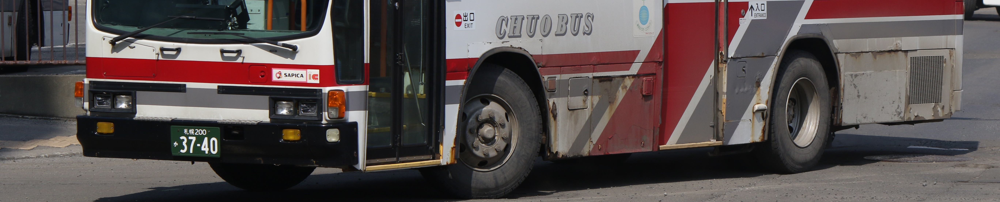
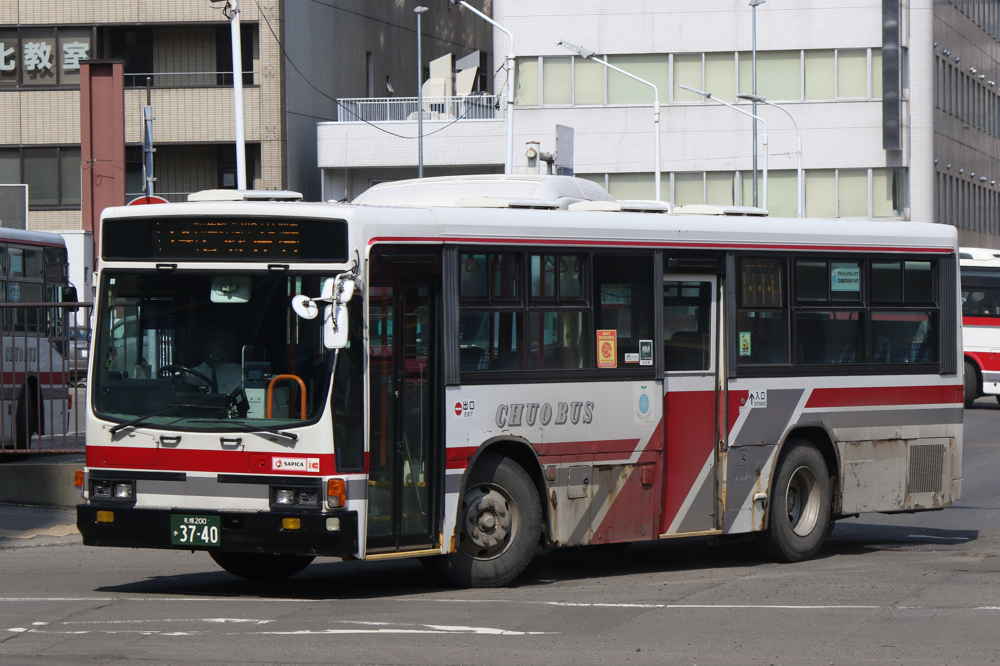

札幌200か・3740
ホーム
北海道中央バス
ジェイ・アール北海道バス
道北バス
旭川電気軌道
道南バス
札幌200か・3740 車両詳細
車両基本情報
登録番号
札幌200か・3740
シャシメーカー
いすゞ自動車
型式
KC-LV280L
ボディメーカー
いすゞバス製造
ボディ
キュービック
年式
1999年
原動機型式
8PE1-S
所属営業所
石狩営業所
備考
引退済み
車両写真

関連リンク
北海道中央バス トップ
日野車両一覧